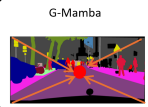

In short重點
G-Mamba is the core operator of DGM-Net, and this paper does not propose it as a new method. It is a supplementary analysis addressing one narrower question: does the operator still work once detached from the architecture it was designed for? Replacing only the context head of six established CNN segmentation networks improves all six.
G-Mamba 是 DGM-Net 的核心運算子，本篇論文並非把它當作新方法提出。這是一份補充性的分析，只回答一個更窄的問題：這個運算子一旦離開它原本被設計的架構，是否仍然有效？只置換六個成熟 CNN 分割網路的上下文模組，六個全部提升。
Why this study exists這篇分析的定位
G-Mamba was introduced in DGM-Net as the operator at the centre of that architecture. Nothing new is proposed here. What makes this study worth writing is an attribution problem: DGM-Net changed the context head, the decoder, the loss, and the geometric priors all at once, so a reader cannot tell how much of the improvement belongs to the operator itself.
CNN segmentation networks nearly all attach a context head to the backbone — ASPP, PPM, or an attention module — to enlarge the receptive field. These heads are effective but expensive, and attention-based ones tend to leak semantics across object boundaries. If the geometry-guided operator has independent value, it should be visible when it replaces those heads and nothing else changes.
G-Mamba 是在 DGM-Net 中提出的，位於該架構的核心。 本篇沒有提出任何新東西。這份分析之所以值得寫，是因為一個歸因問題： DGM-Net 同時改動了上下文模組、解碼器、損失函數與幾何先驗， 讀者無從判斷其中有多少改善該歸功於這個運算子本身。
CNN 分割網路幾乎都會在骨幹之後外掛一個上下文模組——ASPP、PPM 或注意力模組——來擴大感受野。 這些模組確實有效，但成本高昂，而基於注意力的版本還容易造成語義跨越邊界洩漏。 如果幾何導引的運算子具有獨立價值，那麼在只置換這些模組、其餘完全不動的條件下，它應該看得出來。
The protocol實驗協定
G-Mamba is inserted into six CNN architectures by replacing only the original context head: ASPP in DeepLabV3+, PPM in PSPNet, dual attention in DANet, criss-cross attention in CCNet, point-wise spatial attention in PSANet, and object-contextual aggregation in OCRNet. The ResNet-101 backbone, crop size, output stride, and training schedule are held identical across all conditions.
Inside the module, the geometric prompt reweights features before the selective scan, so scan intensity follows boundary and centripetal-flow cues instead of a uniform raster path. The Cascade variant runs standard multi-directional scans first to build macro semantics, then applies the geometric prompt as a precision filter on the final stage.
G-Mamba 被插入六個 CNN 架構，且只置換原本的上下文模組：DeepLabV3+ 的 ASPP、 PSPNet 的 PPM、DANet 的雙重注意力、CCNet 的十字交叉注意力、PSANet 的點式空間注意力， 以及 OCRNet 的物件上下文聚合。所有條件下，ResNet-101 骨幹、裁切尺寸、輸出步幅與訓練排程完全一致。
在模組內部，幾何提示會在選擇性掃描之前重新加權特徵，使掃描強度依循邊界與向心流的線索， 而非均勻的光柵路徑。Cascade 版本則先執行標準的多方向掃描以建立宏觀語義， 最後一個階段才把幾何提示當作精修濾波器施加上去。
Results實驗結果
| Architecture | Baseline | + G-Mamba | + Cascade |
|---|---|---|---|
| DeepLabV3+ | 75.17 | 76.58 | 77.57 |
| DANet | 76.32 | 78.49 | 79.16 |
| CCNet | 75.54 | 77.83 | 78.81 |
| PSPNet | 77.52 | 78.76 | 79.42 |
| PSANet | 76.79 | 77.02 | 77.23 |
| OCRNet | 78.22 | 79.01 | 79.57 |
| 架構 | 原始 | + G-Mamba | + Cascade |
|---|---|---|---|
| DeepLabV3+ | 75.17 | 76.58 | 77.57 |
| DANet | 76.32 | 78.49 | 79.16 |
| CCNet | 75.54 | 77.83 | 78.81 |
| PSPNet | 77.52 | 78.76 | 79.42 |
| PSANet | 76.79 | 77.02 | 77.23 |
| OCRNet | 78.22 | 79.01 | 79.57 |
Every baseline improves, and the Cascade variant improves on the plain one in every case. The largest gains land on DANet (+2.84 with Cascade) and CCNet (+3.27) — both attention-based context heads. This is the more useful finding: the operator is not merely a cheaper ASPP, and its value does not depend on the rest of the DGM-Net architecture being present.
The cost is modest. At 1024 × 1024, adding G-Mamba increases computation by 33 to 51 GFLOPs depending on the host, against original footprints of roughly 1,000 to 1,300 GFLOPs.
六個基線全部提升，而且 Cascade 版本在每一個案例中都優於單層版本。 增益最大的是 DANet（Cascade 下 +2.84）與 CCNet（+3.27）——兩者都是基於注意力的上下文模組。 這是更有用的發現：這個運算子不只是一個比較便宜的 ASPP， 而且它的價值並不依賴 DGM-Net 架構的其餘部分存在。
代價相當溫和。在 1024 × 1024 解析度下，加入 G-Mamba 會依宿主架構不同增加 33 到 51 GFLOPs， 而這些架構原本的運算量約在 1,000 至 1,300 GFLOPs 之間。
Limitations限制
This is a short, deliberately narrow study: two pages, one dataset, one backbone. Parameter counts, latency, and memory profiling are not reported, and evaluation on ADE20K and on lightweight backbones remains to be done. The claim is only that the operator transfers as a context module; the operator itself, and the geometric priors that drive it, belong to DGM-Net.
這是一篇刻意寫得很窄的短論文：兩頁、一個資料集、一個骨幹網路。參數量、延遲與記憶體剖析都尚未報告，在 ADE20K 與輕量骨幹上的評估也還沒做。本文主張的僅止於「這個運算子可以作為上下文模組被遷移」；運算子本身，以及驅動它的幾何先驗，都屬於 DGM-Net。